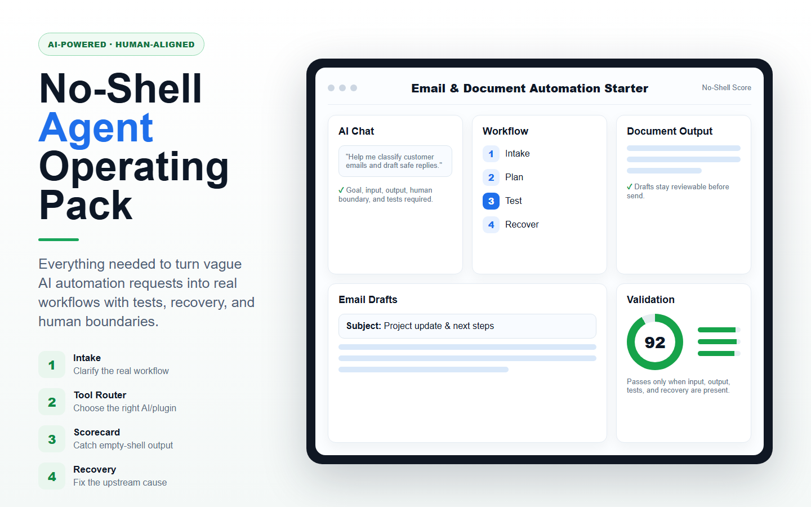

버튼, 문서, 코드가 생겨도 입력과 출력, 사람 경계가 없으면 실제 자동화가 아니다.
For non-coders using AI agents
AI 자동화가 껍데기로 끝나지 않게 만드는 운영팩.
ChatGPT, Claude, Codex, Gemini에게 업무를 맡길 때 목표, 입력, 출력, 도구, 사람 확인 경계, 테스트, 실패복구까지 빠지지 않게 잡아준다.

왜 필요한가
플러그인, 스킬, MCP, 브라우저 자동화 중 무엇을 써야 할지 자연어로 고른다.
새 게이트를 추가하는 대신 목표, 프롬프트, 도구, 경로, 권한 중 원인을 고친다.
Before / After
"내 이메일 답장 자동화 만들어줘."
입력 없음, 출력 위치 없음, 사람 확인 경계 없음, 테스트 없음.
입력, 반복주기, 판단 기준, 결과물, 저장 위치, 사람 경계, 테스트 3개를 먼저 표로 만든다.
첫 10분 검증 가능한 자동화 흐름으로 좁혀진다.
무료 공개 베타
AI 자동화 실패 진단 카드
공개 베타 이메일/문서 운영팩
GitHub star/issue
사용 신호 이후 검토
검증 기준
지금은 돈을 받지 않는다. 무료 공개 베타로 열어두고 GitHub star, issue, 공유, 실제 workflow 피드백이 쌓이는지 본다. 사용 신호가 없으면 포지션을 줄인다.